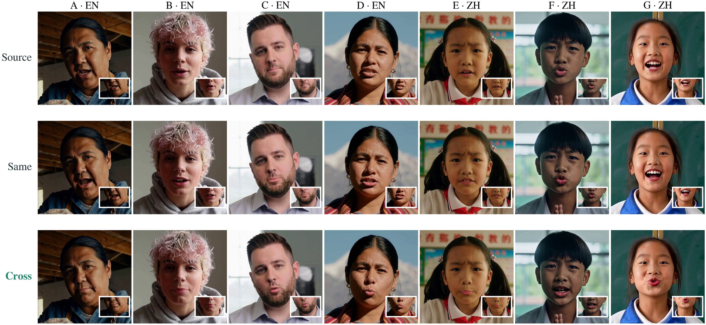
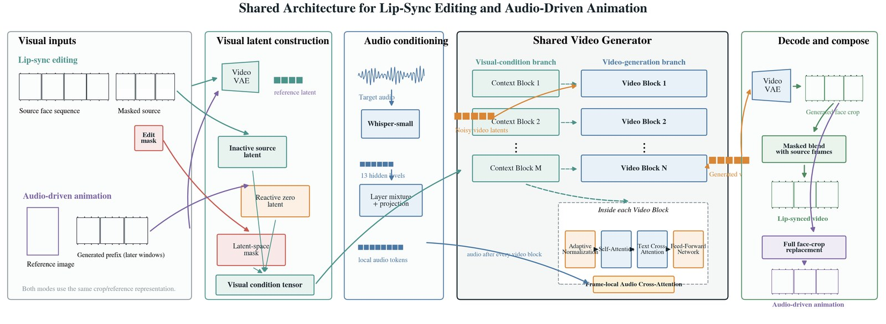
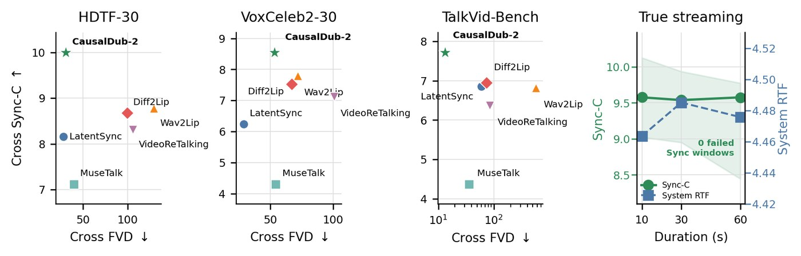
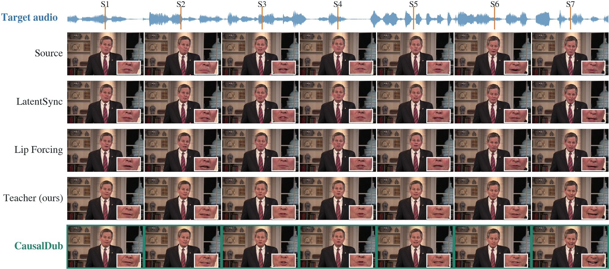

CausalDub
Edit only the mouth of a source video to follow replacement speech—while preserving identity, pose, expression, lighting, and non-mouth motion—with two denoising evaluations and one audio branch per causal block.

Seven frozen cases (English A–D, Chinese E–G): source articulation, same-audio reconstruction, and replacement-speech edit. Mouth insets highlight lip response.
Source-video lip editing must follow replacement speech while preserving the source video’s identity, pose, expression, lighting, and non-mouth motion. We compress a strong full-context editor into a block-causal model with two denoising evaluations and one audio branch per block. The construction adapts the editor to causal generation, regresses two-step trajectories from the guided causal parent, and applies guided distribution matching with an appearance-retention anchor. On held-out CausalDub-Bench the student reaches 8.681 cross Sync-C, non-inferior to its 48-step teacher (8.718) and above every external method (best 7.575). SyncNet-independent lip-reading WER and audio-shift calibration support that the gain is not a SyncNet artifact.
A full-context teacher is adapted to causal generation, used to supervise two-step trajectories, then refined with guided distribution matching and retention.

Block-causal student: two denoising evaluations, one audio branch, bounded history.
Cross-audio lip sync and visual quality on public benchmarks. FPS is single-H20 marginal throughput of the full public pipeline.
| Method | NFE | FPS↑ | HDTF Sync-C↑ | HDTF Sync-D↓ | HDTF FVD↓ | CDB Sync-C↑ | CDB FVD↓ |
|---|---|---|---|---|---|---|---|
| Wav2Lip | 1 | 5.2 | 8.782 | 6.972 | 129.51 | — | — |
| LatentSync 1.6 | 20 | 2.2 | 8.160 | 7.035 | 28.05 | — | — |
| Lip Forcing | — | 2.4 | — | — | — | 5.192 | 15.78 |
| Teacher (ours, 48-NFE) | 48 | — | 9.422 | 6.127 | 27.49 | 8.718 | 15.23 |
| CausalDub | 2 | 6.3 | 10.001 | 6.062 | 30.89 | 8.681 | 17.35 |
CDB = CausalDub-Bench-256 (held-out identities, English + Chinese). Full tables, VoxCeleb2 / TalkVid, WER, and ablations are in the paper and supplementary.

Synchronization–efficiency trade-off. CausalDub sits at high Sync-C with 2 NFE.

Cross-audio comparison on the first HDTF item. All methods receive the same source and replacement waveform.
Twenty frozen, source-disjoint CausalDub-Bench examples (10 English / 10 Chinese), selected by a reproducible sync + reconstruction gate and visual farthest-point sampling—not a hand-picked top-20. Each case shows source, same-audio reconstruction, and replacement-speech edit.
Clips autoplay muted when scrolled into view (~3.4 s, looped). Use the controls or “Unmute” for replacement speech audio.
Please cite CausalDub as follows (update authors / venue when available):